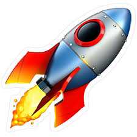

 INDIAN SPACE RESEARCH ORGANISATION
OUR SERVICES
Lanch Services
Mission Support
Ground System Support
Satelite Navigation Services
AERO SERVICE
AEROmission provides specialized services in the field of Aerospace, Aviation, and Drone Technology, focusing on education, innovation, and technical support. 1. Aerospace Training Services Structured training programs in aeronautics and aerospace engineering, covering both theoretical concepts and practical applications. 2. Drone Design & Development Services End-to-end support for drone design, fabrication, testing, and deployment for academic, industrial, and commercial use. 3. Aircraft Model & Prototype Development Design and development of aircraft models and prototypes for educational institutions, research projects, and competitions. 4. Simulation & Design Support Access to aerospace simulation tools and design software for aerodynamic analysis, flight simulation, and performance evaluation. 5. Student Project Assistance Technical guidance and complete support for mini projects, final-year projects, and research-based aerospace applications.